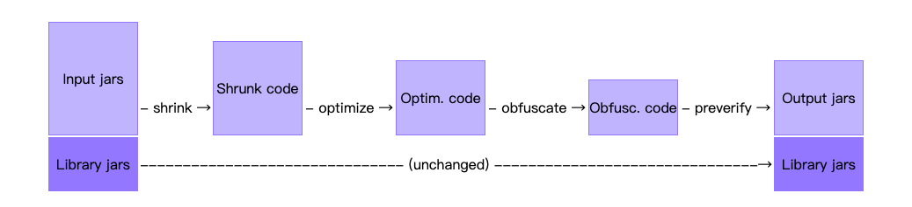

之前与遇到过，对于某些类其实可以不用进行混淆的。比如对于 Gson 进行序列与反序列化的类，如果在默认的情况下进行了混淆的话，那么其将不能正确的进行解析出想要的结果，或序列化成我们想要的格式。（除非指定了 SerialableName 注解，但如果是嵌套了多种类型的话就比较麻烦了），所以之前遇到的时候是在 proguard-pro 中进行了一个 keep 的设置。
混淆会生成的文件
位于
- dump.txt APK文件中所有类文件的内部结构
- mapping.txt 原始与混淆过的类、方法、字段间的转换。
- seeds.txt 未混淆的类与成员
- usage.txt 从APK移除的代码
自定义保留
事实了，谷歌提供了两种方法来解决保留某些类不进行混淆的问题：
- 使用注解支持库的情况下，可以在我们想要保留的类、方法、字段上添加
@Keep注解。 - 在 ProGuard 配置文件内添加一行
-keep说明。
第一种方法很简单，我们来看一下第二种。
ProGuard
ProGuard 是一个 Java 类文件压缩器、优化器、混淆和预校验器。
- 压缩阶段：检查和移除没有使用的类、方法、字段、属性。
- 优化阶段：分析和优化方法的字节码。
- 混淆阶段：以短的，无意义的名称来重命名剩下的类，字段，方法。这会让代码更小，更高效，更难被逆向。
- 预校验：会给类添加校验信息。
这几个步骤都是可选的。实际上，ProGuard 也可以用来仅仅列出应用中的无用代码，或者进行预校验。

Entry Points
为了决定哪些代码需要保留，哪些代码需要丢弃或混淆，我们必须指定一个或多个切入点。切入点 通常是比较典型的，拥有 main 方法，小程序等。
使用
ProGuard 的使用非常的详细，在这里有它的一个比较完善的说明文档。
keep
- -keep [,modifier, …] class_specification 指定需要保留的类或类成员作为切入点。
- -keepclassmembers [,modifier,…] class_specification 如果类是保留的，那么制定其需要保留的类成员。
- -keepclasseswithmembers [,modifier,…] class_specification 当所有指定需要的类成员条件都存在的时候，保留这个类及其成员。
- -keepnames class_specification，-keep,allowshrinking class_specification 如果没有被移除的话，指定需要保留其名字的类或类成员。
- -keepclassmembernames class_specification， -keepclassmembers,allowshrinking class_specification 如果没有被移除的话，指定需要保留的类成员。
- -keepclasseswithmembernames class_specification，-keepclasseswithmembers,allowshrinking class_specification 在压缩阶段后，如果所有指定的类成员都存在的话，保留指定的类和类成员。
class_specification
类指定器，这是比较复杂的一个东西了。
一个 class_specification 是类和类成员的模板。其基本的语法如下：
[] [[!]public|final|abstract|@ ...] [!]interface|class|enum classname |
其中：
[]表示其内容是可选的。...表示可存在多个|表示可选值()进行分组!表示表示非的意思。
规则：
- 每个类名都必须是全引用的，类名可以包含正则表达式：
- ? 单个字符，但不包括包分隔符。
- 任意字符，但不包括包分隔符。
mypackage.*Test*会匹配mypackage.YourTestApplication,但不会匹配mypackage.mysubpackage.MyTest。mypackage.*会匹配所有包内的类，但不包括子包内的类。
- 任意字符，但不包括包分隔符。
- 任何内容，包括子包，包括包分隔符。`.Text` 会匹配所有包的 所有 Test 类（除了根包），
- 字典和方法都不包含参数名字。也可能有以下的几种符号：
构造器 任意字段 任意方法 - 任何字段或方法
- 上面的通配符都不包括返回类型，只有
<init>有一个参数列表 - 字段和方法名都可能包含正则表达式。
?表示方法中的单个字符，*表示方法中的任何部分的字符。
所以想要保留一个类
-keep cn.google.com.**{*;} |
会将 cn.google.com 下所有的类，所有子包中的类的所有字段和方法都保留。